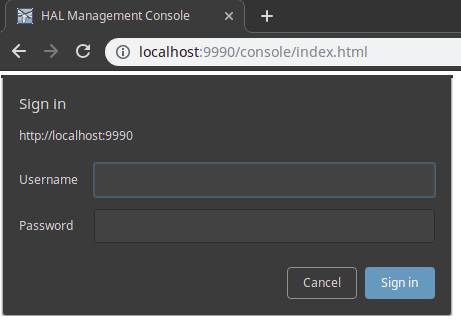

Instalación y configuración de WildFly y JBoss Tools
Contenido
- Instalación del último JDK
- Instalación de WildFly 8
- Instalación de Eclipse 4.4
- Instalación de JBoss Tools 4.2
Instalación del último JDK
-
Asegúrese de que la última versión del kit de desarrollo de Java (JDK 7 Update 75 o posterior) está instalada en su ordenador. Si el JDK está correctamente instalado en su ordenador, puede ir al paso 4 de esta sección; de lo contrario, continúe con el siguiente paso.
-
Vaya a http://www.oracle.com/technetwork/java/javase/downloads/index.html y siga las instrucciones del sitio web de Oracle para descargar la última versión del JDK (Java SE 7 Update 75 o posterior) para el sistema operativo de su ordenador.
-
Instale el JDK en un directorio de su ordenador, por ejemplo, C:\Java\jdk7_75.
-
Cree una variable de entorno llamada JAVA_HOME que apunte al directorio de instalación del JDK, por ejemplo C:\Java\jdk7_75.

Instalación de WildFly 8
-
Obtenga la última versión estable del servidor de aplicaciones WildFly (8.2.0.Final) de http://wildfly.org/downloads/
(wildfly-8.2.0.Final.zip). -
Extraiga el archivo zip en un directorio de su ordenador, por ejemplo,
C:\EAI. La ruta no debe contener espacios. Se creará un nuevo directorio, por ejemploC:\EAI\wildfly-8.2.0.Final, que contiene los archivos de WildFly.
-
Utilice el script
<Directorio WildFly>\bin\standalone.batpara iniciar el servidor WildFly y comprobar la instalación. Tras el arranque, debería poder acceder al servidor web en http://localhost:8080. -
Abra el enlace Consola de administración y siga las instrucciones para añadir un nuevo usuario de gestión.
 -
Después de crear un usuario, vuelva a visitar la Consola de Administración.
-
Vaya a Manage Deployments y haga clic en Add Content para subir hsqldb.jar. Asegúrese de que el archivo desplegado está habilitado.
-
Vaya a Configuración -> Conector -> Fuentes de datos y haga clic en Añadir . Utilice la siguiente información para crear un origen de datos (datasource):
- Nombre: DefaultDS
- Nombre JNDI: java:/DefaultDS
- Elija hsqldb.jar como controlador
- URL de conexión: jdbc:hsqldb:${jboss.server.data.dir}${/}hypersonic${/}localDB;shutdown=true
- nombre de usuario: sa
-
Habilite el nuevo origen de datos. También puede utilizar la JBoss-CLI para desplegar el controlador HSQLDB y añadir la fuente de datos:
./jboss-cli.sh -c "deploy ~/Downloads/hsqldb.jar,data-source add --driver-name=hsqldb.jar --use-ccm=false --jta=false --user-name=sa --name=DefaultDS --jndi-name=java:/DefaultDS --connection-url=jdbc:hsqldb:\$\{jboss.server.data.dir\}\$\{/\}hypersonic\$\{/\}localDB;shutdown=true" -
Para detener el servidor, pulse CTRL-C en la ventana de la consola que se abrió durante el paso 3.
Instalación de Eclipse 4.4
-
Descargue el IDE Eclipse para desarrolladores de Java EE para su sistema operativo (versión 4.4.2, Luna SR2) desde http://www.eclipse.org/downloads/packages/eclipse-ide-java-ee-developers/lunasr2.
-
Extrae el archivo descargado, por ejemplo,
eclipse-jee-luna-SR2-win32-x86_64.zip, a un directorio de tu ordenador, por ejemplo,C:\EAI. Esto creará un subdirectorio, comoC:\EAI\eclipse. -
Inicie Eclipse. El ejecutable eclipse.exe se encuentra en el directorio de instalación. Espere a que aparezca la ventana "Workspace Launcher" y seleccione un directorio de espacio de trabajo, por ejemplo
C:\EAI\projects. Esta ruta tampoco debe contener espacios. El directorio del espacio de trabajo es donde se almacenarán todos sus proyectos. Puede marcar la casilla "Usar esto como predeterminado y no volver a preguntar" para evitar que este diálogo aparezca en el siguiente inicio. Haga clic en "Aceptar" para cerrar el diálogo y llegar a la ventana de la mesa de trabajo.
Instalación de JBoss Tools 4.2 para Eclipse
-
Seleccione "Ayuda->Eclipse Marketplace..." en la barra de menú de Eclipse. Elija "Eclipse Marketplace" si se le pide un catálogo de mercado.
-
Busque "JBoss Tools" e instale JBoss Tools (Luna), versión 4.2.x.
-
Espere a que termine el "Cálculo de requisitos..." y asegúrese de que todas las características están marcadas, luego confirme.
-
Acepte los acuerdos de licencia y haga clic en "Finalizar".
-
Cuando se complete la descarga, aparecerá una advertencia de seguridad sobre "Contenido no firmado". Acepte con "OK" para comenzar con la instalación.
-
Cuando se le pida que lo haga, "Reinicie ahora".
-
Después de cerrar la ventana "Welcome", verá la perspectiva "Java EE". La perspectiva seleccionada se indica en la esquina superior derecha, como se muestra en la siguiente figura:

Si el botón Java EE no está visible, puede cambiar a la perspectiva Java EE a través de "Ventana->Abrir Perspectiva->Otra..." . En el cuadro de diálogo "Abrir perspectiva" haga doble clic en la entrada Java EE.
-
Active la pestaña de vista "Servidores" en la parte inferior derecha de la ventana. Haga clic con el botón derecho del ratón en el área vacía y seleccione "Nuevo->Servidor", como se muestra en esta captura de pantalla:

-
En la ventana "Nuevo servidor" seleccione "WildFly 8" (de la categoría JBoss Community) como tipo de servidor y haga clic en "Siguiente".
Establezca la entrada "Directorio de inicio" en el directorio de instalación de WildFly AS, por ejemplo,
C:\EAI\wildfly-8.2.0.Final, y haga clic en "Finalizar". -
En la vista "Servidores" seleccione el servidor recién creado y haga clic en el botón verde de Iniciar.
Se abrirá una nueva vista de "Consola" que mostrará los registros de inicio del AS WildFly.
Para mayor información consulte https://wwu-pi.github.io/tutorials/lectures/eai/010_tutorial_jboss_setup.html#:~:text=Use%20the%20script%20%3CWildFly%20directory,add%20a%20new%20management%20user.